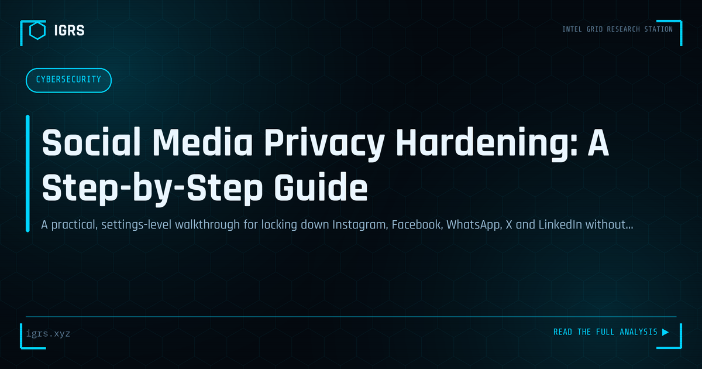

Social Media Privacy Hardening: A Step-by-Step Guide
| File No. | OD-004/2026 |
| Subject | Platform-by-platform privacy configuration and exposure reduction |
| Category | Privacy & Safety |
| Author | Manuj Kumar Pandey |
| Published | 2026-04-30 |
| Reading time | 7 minutes |
A practical, settings-level walkthrough for locking down Instagram, Facebook, WhatsApp, X and LinkedIn without abandoning them.
The principle: shrink the public surface
You do not need to delete your accounts to be safe. You need to control three things: who can see your content, who can find and contact you, and what the platform leaks about you by default. Work through each platform below; the whole exercise takes about an hour.
Universal steps (do these everywhere first)
- Enable two-factor authentication — prefer an authenticator app or passkey over SMS where offered. Account takeover, not snooping, is the most common real-world harm.
- Review active sessions and connected apps. Log out unknown devices; revoke third-party apps you no longer use — old quiz apps and "who viewed my profile" services retain access for years.
- Audit your profile fields. Birth date, hometown, school and employer answer the security questions used by banks and telecom providers. Remove or restrict them.
- Turn off contact syncing. Uploading your phone book maps your entire social graph to the platform and exposes you in others' "people you may know".
- Settings → Account privacy → Private account (if your account is personal, not a creator page).
- Settings → Tags and mentions → require approval before tagged posts appear on your profile.
- Settings → Story → hide story from specific people; disable story sharing/resharing.
- Review old posts for location tags; remove geotags on anything showing your home, gym or office routine.
- Disable Activity status so contacts cannot see when you are online.
- Run the built-in Privacy Checkup, then go further: set past posts to Friends via "Limit past posts" (one click retroactively restricts your entire history).
- Settings → Profile details → set friend list, birthday, hometown and family members to Only me.
- Settings → How people can find you → restrict lookup by phone number and email to Friends.
- Enable Timeline review so tags require your approval.
- Settings → Privacy → set Profile photo, About, and Last seen/Online to "My contacts" (or "My contacts except…").
- Set Groups to "My contacts" — this stops strangers adding you to scam groups, a major fraud vector in India.
- Enable two-step verification (a PIN that blocks SIM-swap account hijacks).
- Turn on Silence unknown callers to cut off international spam-call campaigns.
X (Twitter)
- Privacy and safety → Audience and tagging → Protect your posts if the account is personal; disable photo tagging.
- Privacy and safety → Discoverability → untick discovery by email and phone number.
- Remove precise location from posts and delete location history.
LinkedIn is deliberately public — but you still control the edges:
- Settings → Visibility → Profile viewing options → Private mode (others cannot see you viewed them).
- Restrict connections list visibility — your network map is valuable to social engineers crafting pretexts.
- Think before posting "excited to join…" announcements with start dates; new-joiner posts are a known target list for CEO-fraud and fake-IT-helpdesk scams.
The behavioural layer
Settings cannot fix what behaviour leaks. Three habits with outsized payoff: post travel photos after you return, not live; keep your residential building, vehicle plate and children's school out of frame; and remember that anything sent to a "close friends" list can still be screenshotted. Configure once, then let habit do the rest.